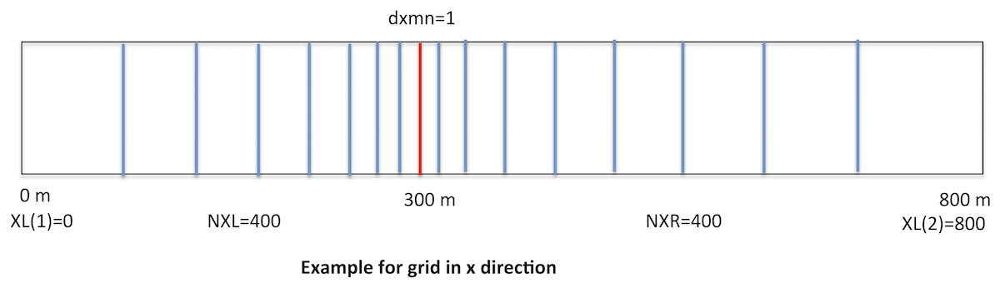
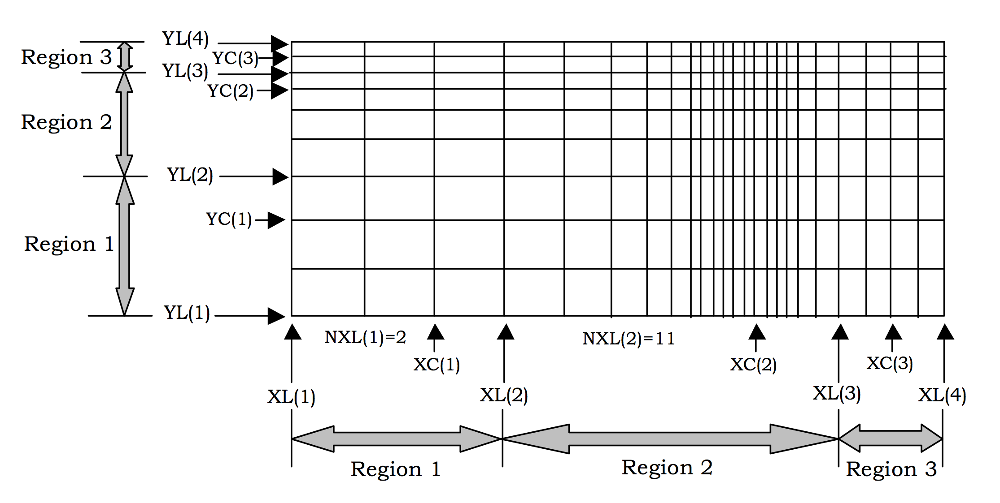
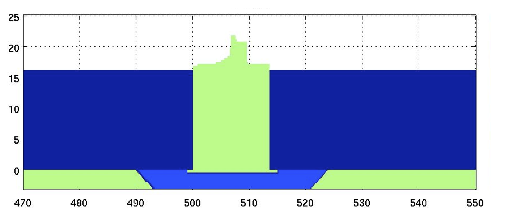

Mesh Generation¶
The computing mesh is constructed from a number of “submeshes” defined at each coordinate direction. The mesh generation section of the input file specifies the boundaries, the number of cells, the minimum cell dimension, and the convergence point (“central” point) of each submesh. Arbitrary variable cell spacing is achieved by linking submeshes together. The number of cells in each submesh is specified by supplying cell numbers to the left and right of the convergence point. Cells directly adjacent to the convergence point will have a cell spacing equal to the minimum value, specified as either DXMN or DYMN. The cell spacing is then expanded quadratically from these cells to the left and right edges of the submesh in accordance with the desired number of cells (NXR, NXL or NYR, NYL) in the input list. If the number of cells specified on the left (right) should produce a uniform cell size less than the minimum size DXMN (or DYMN), a uniformly spaced mesh is generated with dx < DXMN (or dy < DYMN). The chosen mesh spacing is then determined by the user-specified number of cells (NXR, NXL or NYR, NYL). The number of cells to the left and right of the convergence point need not to be equal, but there must be at least one on both sides.
An example for grid generation in x direction is shown in the figure here.
$mesh
1,0,800.0,300.0,400,400 = nkx,xl(nkx+1),xc(nkx),nxl(nkx),nxr(nkx)
1.0 = dxmn(nkx)
1,0.0,12.0,6.0,20,20 = nky,yl(nky+1),yc(nky),nyl(nky),nyr(nky)
0.3 =d ymn(nky)
$end
Definitions
NKX (>0) Number of submesh regions in the x- direction.
XL (m=1,NKX+1)(≥0.0) Location of the left edge of submesh m. NKX+1 values of XL(m) are necessary because the right edge of submesh m is equivalent to the left edge of submesh m+1, XL(m+1). The values should be given as an increasing sequence of numbers.
XC (m=1,NKX) (>0.0) x-coordinate of the convergence point in submesh region m.
NXL (m=1,NKX) (>0) Number of cells between locations XL(m) and XC(m) in submesh region m.
NXR (m=1,NKX) (>0) Number of cells between locations XC(m) and XL(m+1) in submesh m.
DXMN(m): DXMN(m=1,NKX)(>0.0) Minimum space increment in the x- direction, for submesh m.
NKY (>0) Number of submesh regions in the y–direction.
YL (m=1,NKY+1) (≥0.0) Location of the bottom edge of submesh m.
NKY+1 values of YL(m) are necessary because the top edge of submesh m is equivalent to the bottom edge of submesh m+1, YL(m+1). The values should be given as an incresaing sequence of numbers.
YC (m=1,NKY) (>0.0) y-coordinate of the convergence point in submesh region m.
NYL (m=1,NKY) (>0) Number of cells between locations YL(m) and YC(m) in submesh region m.
NYR (m=1,NKY) (>0) Number of cells between locations YC(m) and YL(m+1) in submesh m.
DYMN(NKY): DYMN(m=1,NKY)(>0.0) Minimum space increment in the y- direction, for for submesh m.
A more complex one can be found in the figure below.
PRACTICE (Muthu’s caisson ):
$mesh
2,106.0,506.0,706.0,476.0,536.0,185,150,150,85 = nkx,xl(nkx+1),xc(nkx),nxl(nkx),nxr(nky)
0.2,0.2 = dxmn(nkx)
1,-3.3,26.3,3.3,30,70 = nky,yl(nky+1),yc(nky),nyl(nky),nyr(nky)
1.5 =dymn(nky)
$end